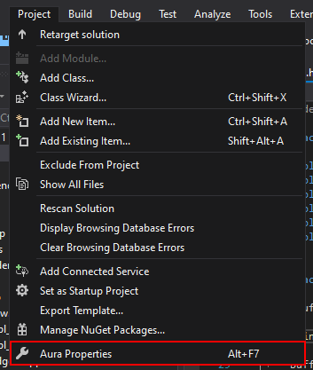
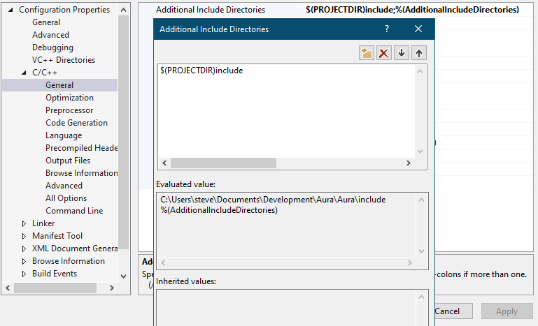
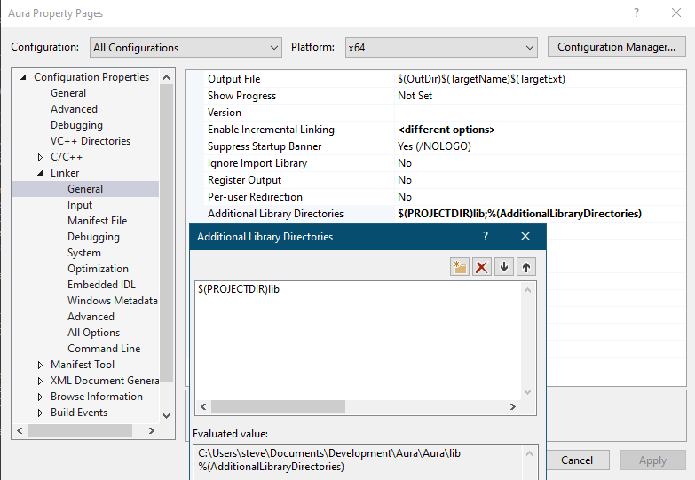
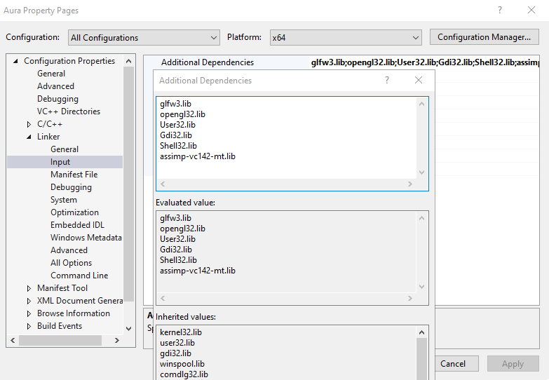

Coding Environment Setup
Personally, I use Visual Studio 2019 (VS19) as my text editor and compiler. VS19 has many great features
for C++ developers but can appear bulky and confusing to use for new users, but I believe it is worth
the trouble. If you don't already use VS19, then you should download it from Microsoft's page
, and select desktop C++ development during the installation. Note that you'll need a somewhat powerful
computer in order to run it properly. Something like a Raspberry Pi probably wouldn't work too well
with VS19.
First we have to create our project. To do that, open VS19 and click on "Create a new project". The project
template we want is "empty project" for C++ on Windows. Name it whatever you want and put it in a safe space.
Keep the solution name the same as the project name. Next you have to get the headers from the github HERE,
where I packaged them all into a nice zip. Just extract the headers and folders into the project
directory (where your main.cpp file goes).
Linking the project to all the libraries and headers we need is done through the project settings:




After all that, we can finally include the headers we want and call the function pointers in the libs. We can
begin writing some code.